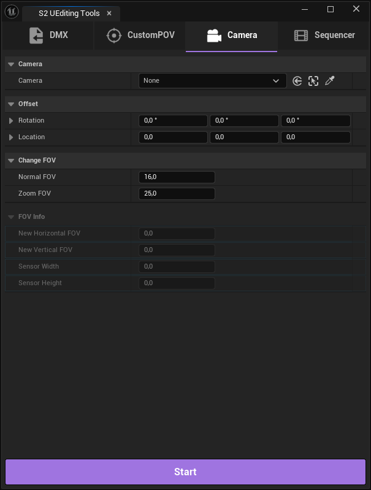

UEditingTools for Source2
Unreal Engine 5.6+ widget for creating cinematic content from Counter-Strike 2 demos. Parses DMX files exported from Source Filmmaker and automatically generates complete Level Sequences with animated characters, cameras, weapons, grenades, and effects.
Виджет для Unreal Engine 5.6+ для создания кинематографического контента из CS2-демок. Читает DMX-файлы из Source Filmmaker и автоматически создаёт Level Sequence с камерами, анимированными персонажами, оружием, гранатами и эффектами.

Requirements:
- Unreal Engine 5.6 or newer
- PyToolkit plugin (1.8+)
- Counter-Strike 2
- CS2 demo parser executable
- Launch Unreal Engine and enable the following plugins via Edit → Plugins:
- Editor Scripting Utilities
- Python Editor Script Plugin
- Sequencer Scripting
- Http Blueprint
- PyToolkit
- Download the widget archive. Open your project's
Contentfolder and copy all subfolders from the archive into it. - In the Content Browser, find the Widgets folder, right-click UET_Main, and select Run Editor Utility Widget.
Требования:
- Unreal Engine 5.6 или новее
- Плагин PyToolkit (1.8+)
- Counter-Strike 2
- Парсер демок CS2
- Запустите Unreal Engine, включите плагины (Edit → Plugins):
- Editor Scripting Utilities
- Python Editor Script Plugin
- Sequencer Scripting
- Http Blueprint
- PyToolkit
- Скачайте архив с виджетом. Откройте папку
Contentвашего проекта и скопируйте все подпапки из архива в неё. - В Content Browser найдите папку Widgets, кликните правой кнопкой по UET_Main и выберите Run Editor Utility Widget.

General Settings
- Working Directory — folder inside the UE project where demo data will be imported.
- CS2 Demo Parser Path — path to the demo parser
.exe. - Save Level — automatically save the level after import.
- Verbose Logging — enable extended log output.
Models Settings
- Receives Decals — allow decals on imported models.
- Bounds Scale — collision bounds scale. Increase if models disappear at certain camera angles.
- Models Scale — scale of imported models.
Misc Settings
- Use Weapon System — use the WeaponSystem blueprint (if present) to generate shot, blood and decal effects.
- Import Particles For Grenades — import particle effects for grenades.
- Grenades Particles Style — Niagara or Cascade.
Import Settings
- Import Cameras — import camera data from the demo.
- Import Players — import player animations.
- Import Weapons — import weapon animations.
- Import Nades — import grenades.
- Import Static Models — import static models.
POV Mode
- Auto — uses parsed demo data to automatically determine the selected player's equipment (sleeves, gloves, weapons). Import camera and create POV with one click.
- Manual — Step 1: select camera, bounds scale, and animation style. Step 2: select sleeves, gloves, and weapon from a list. Spawn Idle, Draw, Fire, Reload, or Look at animations directly into the sequencer.
Camera Editor
- Rotation / Location Offset — offset added to all camera keys in the sequencer.
- Normal FOV / Zoom FOV — camera field of view in normal and scoped modes.
Time Remap
Creates a helper Level Sequence for controlling playback speed via a Time Remap blueprint.BPM Helper
Places markers in the sequencer based on music rhythm. Accepts BPM and time signature, places green markers for main beats and white markers for secondary beats.General Settings
- Working Directory — папка внутри UE проекта, куда будут импортироваться данные демо.
- CS2 Demo Parser Path — путь к
.exeфайлу парсера демок. - Save Level — автоматически сохранять уровень после импорта.
- Verbose Logging — включить расширенный вывод логов.
Models Settings
- Receives Decals — разрешить отображение декалей на импортированных моделях.
- Bounds Scale — масштаб границ коллизии. Увеличьте, если модели пропадают при определённых углах камеры.
- Models Scale — масштаб импортируемых моделей.
Misc Settings
- Use Weapon System — использовать WeaponSystem блюпринт для эффектов выстрелов, крови и декалей.
- Import Particles For Grenades — импортировать эффекты частиц для гранат.
- Grenades Particles Style — Niagara или Cascade.
Import Settings
- Import Cameras — импортировать данные камер из демо.
- Import Players — импортировать анимацию игроков.
- Import Weapons — импортировать анимацию оружия.
- Import Nades — импортировать гранаты.
- Import Static Models — импортировать статичные модели.
POV-режим
- Auto — автоматически определяет снаряжение игрока из демки. Одной кнопкой импортируется камера и создаётся POV в сиквенсере.
- Manual — Шаг 1: выбор камеры, масштаба bounds и стиля анимации. Шаг 2: выбор рукавов, перчаток и оружия. Кнопки спавнят анимации Idle, Draw, Fire, Reload, Look at прямо в сиквенсер.
Редактор камеры
- Rotation / Location Offset — смещение, добавляемое ко всем ключам камеры в сиквенсере.
- Normal FOV / Zoom FOV — угол обзора в обычном и прицельном режимах.